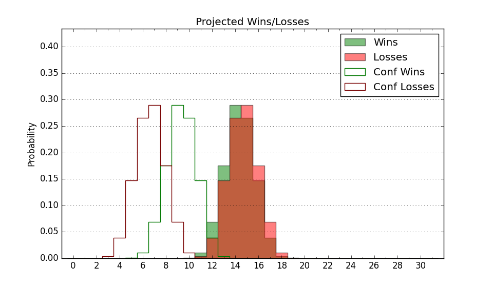

| Home | Game Probabilities | Conferences | Preseason Predictions | Odds Charts | NCAA Tournament |
| City: | Burlington, Vermont | |
| Conference: | America East (3rd)
| |
| Record: | 5-3 (Conf) 10-11 (Overall) | |
| Ratings: | Comp.: -9.2 (260th) Net: -9.9 (263rd) Off: 94.6 (340th) Def: 104.4 (146th) SoR: 0.0 (129th) |
| Remaining | ||||||
|---|---|---|---|---|---|---|
| Date | Opponent | Win Prob | Pred. | |||
| 2/8 | @ Albany (293) | 42.7% | L 64-66 | |||
| 2/13 | New Hampshire (357) | 90.9% | W 70-55 | |||
| 2/15 | @ Maine (208) | 24.2% | L 57-64 | |||
| 2/20 | Bryant (151) | 39.5% | L 67-70 | |||
| 2/22 | UMass Lowell (246) | 61.9% | W 70-67 | |||
| 2/27 | @ NJIT (351) | 63.1% | W 61-58 | |||
| 3/1 | @ UMBC (283) | 40.9% | L 69-71 | |||
| 3/4 | Albany (293) | 71.8% | W 68-62 | |||
| Previous | Game Score | |||||
| Date | Opponent | Win Prob | Result | Off | Def | Net |
| 11/4 | @UAB (121) | 12.5% | W 67-62 | 9.3 | 23.4 | 32.7 |
| 11/6 | @Auburn (1) | 0.3% | L 43-94 | -13.9 | 2.8 | -11.2 |
| 11/9 | @Merrimack (195) | 22.3% | L 51-65 | -6.5 | -3.2 | -9.8 |
| 11/15 | @Iona (297) | 43.8% | L 59-62 | -1.3 | 7.2 | 5.9 |
| 11/19 | Buffalo (342) | 83.7% | W 78-67 | 17.8 | -8.9 | 8.9 |
| 11/23 | (N) Delaware (251) | 47.7% | W 75-71 | 6.8 | 6.2 | 13.0 |
| 11/24 | (N) Fairfield (348) | 75.2% | L 66-67 | -7.0 | -14.9 | -21.9 |
| 11/30 | Northeastern (200) | 50.4% | W 68-64 | 2.2 | 6.6 | 8.8 |
| 12/3 | Brown (226) | 56.6% | L 53-60 | -8.6 | -7.2 | -15.9 |
| 12/7 | @Yale (85) | 6.9% | L 50-65 | -8.9 | 9.3 | 0.4 |
| 12/15 | @Colgate (254) | 33.6% | L 60-65 | -0.3 | -0.0 | -0.3 |
| 12/18 | Miami OH (184) | 47.2% | W 75-67 | 13.7 | 8.6 | 22.2 |
| 12/21 | @Dartmouth (259) | 34.8% | L 54-84 | -13.4 | -23.9 | -37.2 |
| 1/4 | @New Hampshire (357) | 74.6% | W 60-40 | -4.6 | 26.5 | 21.9 |
| 1/9 | @UMass Lowell (246) | 32.3% | W 67-63 | 2.8 | 11.3 | 14.1 |
| 1/11 | @Bryant (151) | 16.1% | L 53-73 | -6.2 | -7.1 | -13.4 |
| 1/16 | Binghamton (308) | 74.9% | W 72-64 | 15.2 | -10.9 | 4.3 |
| 1/23 | NJIT (351) | 85.4% | W 68-64 | -4.4 | -5.0 | -9.4 |
| 1/25 | UMBC (283) | 70.2% | L 63-80 | -10.6 | -24.6 | -35.2 |
| 1/30 | @Binghamton (308) | 46.7% | L 72-75 | 7.8 | -14.3 | -6.5 |
| 2/1 | Maine (208) | 52.1% | W 55-49 | -3.3 | 13.2 | 9.9 |
| Stats & Trends | |||||
|---|---|---|---|---|---|
| Current | Day | Week | Month | Season | |
| Composite | -9.2 | +0.0 | +0.3 | -3.8 | -17.5 |
| Comp Rank | 260 | -- | -1 | -44 | -172 |
| Net Efficiency | -9.9 | +0.0 | +0.5 | -2.0 | -- |
| Net Rank | 263 | -- | +7 | -12 | -- |
| Off Efficiency | 94.6 | -0.0 | -0.0 | +0.5 | -- |
| Off Rank | 340 | -- | +1 | -5 | -- |
| Def Efficiency | 104.4 | +0.0 | +0.5 | -2.5 | -- |
| Def Rank | 146 | +1 | +9 | -27 | -- |
| SoS Rank | 317 | -- | -1 | -19 | -- |
| Exp. Wins | 14.3 | +0.0 | +0.7 | -0.7 | -6.7 |
| Exp. Conf Wins | 9.3 | +0.0 | +0.7 | -0.7 | -3.1 |
| Conf Champ Prob | 2.2 | +0.0 | +1.7 | -17.3 | -56.1 |

| Advanced Stats | ||
|---|---|---|
| Stat | Value | Rank |
| Off Eff FG % | 0.456 | 328 |
| Off Ast Ratio | 0.129 | 277 |
| Off ORB% | 0.226 | 330 |
| Off TO Rate | 0.163 | 288 |
| Off FT Ratio | 0.304 | 255 |
| Def Eff FG % | 0.505 | 156 |
| Def Ast Ratio | 0.128 | 67 |
| Def ORB% | 0.271 | 122 |
| Def TO Rate | 0.142 | 225 |
| Def FT Ratio | 0.312 | 136 |